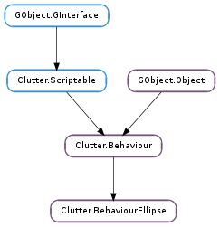

| static | new(alpha, x, y, width, height, direction, start, end) |
| get_angle_end() | |
| get_angle_start() | |
| get_angle_tilt(axis) | |
| get_center() | |
| get_direction() | |
| get_height() | |
| get_tilt() | |
| get_width() | |
| set_angle_end(angle_end) | |
| set_angle_start(angle_start) | |
| set_angle_tilt(axis, angle_tilt) | |
| set_center(x, y) | |
| set_direction(direction) | |
| set_height(height) | |
| set_tilt(angle_tilt_x, angle_tilt_y, angle_tilt_z) | |
| set_width(width) |
| Name | Type | Flags | Description |
|---|---|---|---|
| angle-end | float | r/w | Final angle |
| angle-start | float | r/w | Initial angle |
| angle-tilt-x | float | r/w | Tilt of the ellipse around x axis |
| angle-tilt-y | float | r/w | Tilt of the ellipse around y axis |
| angle-tilt-z | float | r/w | Tilt of the ellipse around z axis |
| center | Clutter.Knot | r/w | Center of ellipse |
| direction | Clutter.RotateDirection | r/w | Direction of rotation |
| height | int | r/w | Height of ellipse |
| width | int | r/w | Width of the ellipse |
None
| Name | Type | Access |
|---|---|---|
| parent_instance | Clutter.Behaviour | r |
Bases: Clutter.Behaviour
The Clutter.BehaviourEllipse struct contains only private data and should be accessed using the provided API
| Parameters: |
|
|---|---|
| Returns: | the newly created Clutter.BehaviourEllipse |
| Return type: |
Creates a behaviour that drives actors along an elliptical path with given center, width and height; the movement starts at start degrees (with 0 corresponding to 12 o’clock) and ends at end degrees. Angles greated than 360 degrees get clamped to the canonical interval <0, 360); if start is equal to end, the behaviour will rotate by exacly 360 degrees.
If alpha is not None, the Clutter.Behaviour will take ownership of the Clutter.Alpha instance. In the case when alpha is None, it can be set later with Clutter.Behaviour.set_alpha ().
| Returns: | angle in degrees |
|---|---|
| Return type: | float |
Gets the at which movements ends.
| Returns: | angle in degrees |
|---|---|
| Return type: | float |
Gets the angle at which movements starts.
| Parameters: | axis (Clutter.RotateAxis) – a Clutter.RotateAxis |
|---|---|
| Returns: | angle in degrees. |
| Return type: | float |
Gets the tilt of the ellipse around the center in the given axis.
| Returns: | the rotation direction |
|---|---|
| Return type: | Clutter.RotateDirection |
Retrieves the Clutter.RotateDirection used by the ellipse behaviour.
| Returns: | the height of the path |
|---|---|
| Return type: | int |
Gets the height of the elliptical path.
| Return type: | angle_tilt_x: float, angle_tilt_y: float, angle_tilt_z: float |
|---|
Gets the tilt of the ellipse around the center in Y axis.
| Parameters: | angle_end (float) – angle at which movement ends in degrees, between 0 and 360. |
|---|
Sets the angle at which movement ends; angles >= 360 degress get clamped to the canonical interval <0, 360).
| Parameters: | angle_start (float) – angle at which movement starts in degrees, between 0 and 360. |
|---|
Sets the angle at which movement starts; angles >= 360 degress get clamped to the canonical interval <0, 360).
| Parameters: |
|
|---|
Sets the angle at which the ellipse should be tilted around it’s center.
| Parameters: |
|---|
Sets the center of the elliptical path to the point represented by knot.
| Parameters: | direction (Clutter.RotateDirection) – the rotation direction |
|---|
Sets the rotation direction used by the ellipse behaviour.
| Parameters: | height (int) – height of the ellipse |
|---|
Sets the height of the elliptical path.
| Parameters: |
|
|---|
Sets the angles at which the ellipse should be tilted around it’s center.